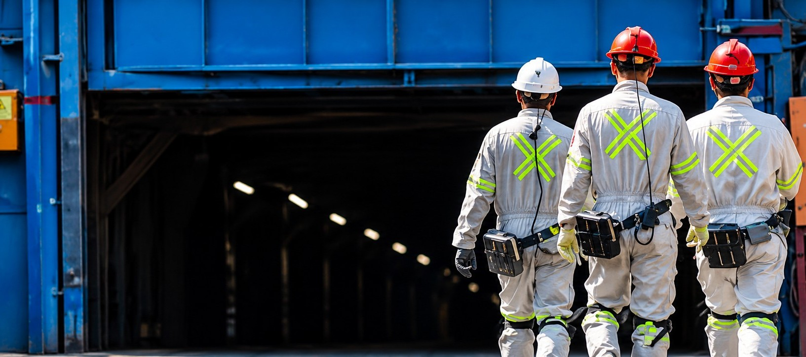

Zero HarmFocus / 01
Zero Harm
Doing no harm is at the core of our actions and decisions, and environment is part of our SHEQ approach.
How Samancor Chrome manages environmental responsibilities across its mining and smelting operations, and where to find environmental documentation.
Across the value chainMining and smelting change the land and resources they depend on. Environment is one of the dimensions of our balanced scorecard, alongside safety, health and risk.
Environmental documentation for all business units is publicly accessible on request through the relevant contact, in line with South African environmental regulations.
Chrome ore is mined at Eastern Chrome Mines and Western Chrome Mines.
Beneficiation plants at the mining operations prepare and concentrate the ore.
Tailings re-treatment plants recover chrome from material that has already been processed.
Submerged-arc and other furnace technologies convert chrome-bearing feed into ferrochrome.
Group-level SHEQ and legal compliance frame environmental management across the business.

Zero HarmDoing no harm is at the core of our actions and decisions, and environment is part of our SHEQ approach.
Environmental management programme reports and related documents for every business unit, publicly accessible on request.
Documentation is provided under South African environmental regulations.
Recovering further chrome from material already processed.
Safety, health, environment and risk form one dimension of our balanced scorecard.
Environmental documentation for all business units is available on request. Start with the SHEQ information page.
A foundational principle at the core of our decisions.
Policies covering safety, health, environment and quality.
Policies that connect operations with the communities around them.
A framework for meeting legal and regulatory obligations.
Policies on relationships with governments and other stakeholders.
A framework in our Guide to Business Conduct.
Environmental documentation covers every mine and smelter.
Publicly accessible through the relevant contact.
Environmental management programme reports are listed on the SHEQ page.
Documentation is provided under environmental regulations.
EIA Regulations Communication Compliance is listed under Legal Information.
A contact route is provided on the SHEQ page.
Environmental performance data will be added once it has been verified and approved.
Downloadable reports and related documents by business unit.
Listed in our legal document library.
Our governance framework, including policies on SHEQ and legal compliance.
Doing no harm is at the core of our actions and decisions.SHEQ information
Samancor Chrome company value
For environmental documentation, use the SHEQ information page. For other enquiries, contact the corporate office.